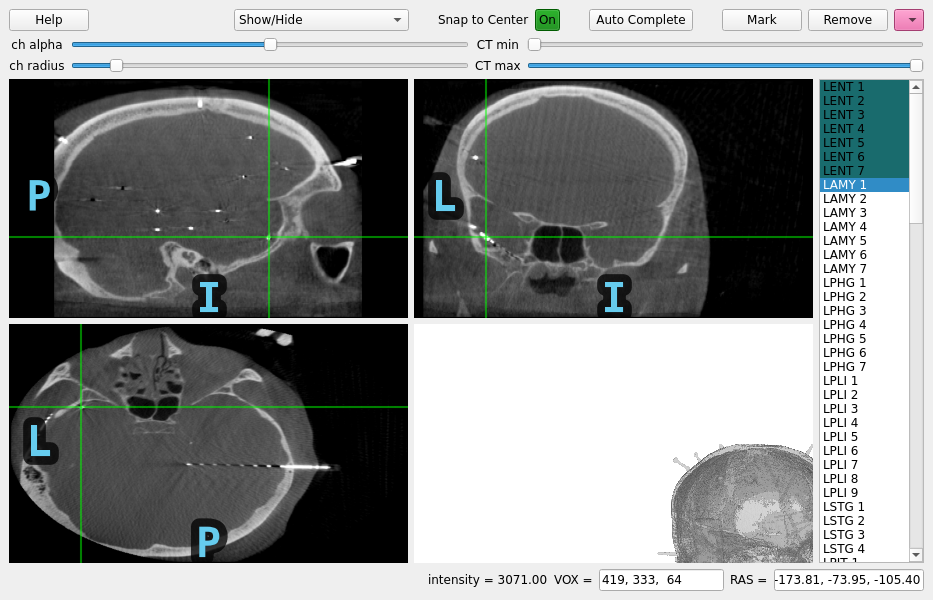
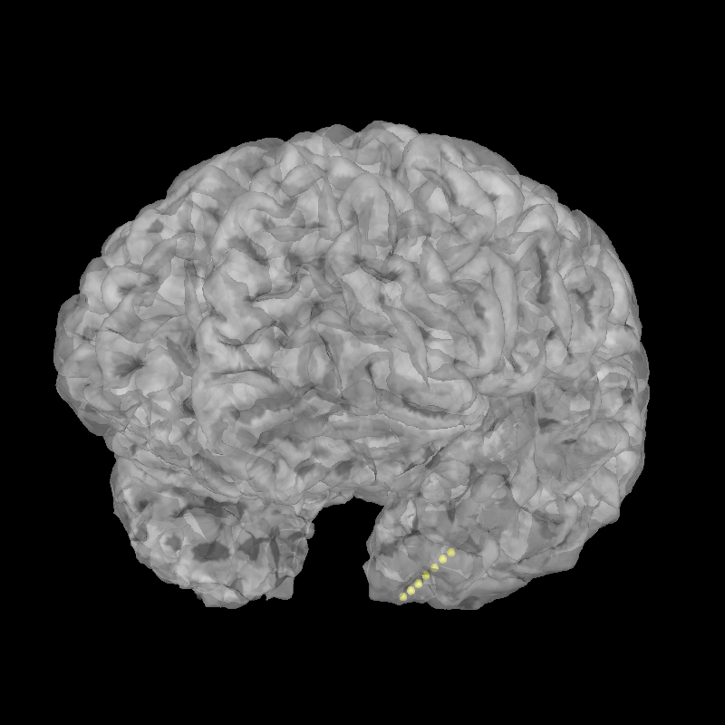

Note
Go to the end to download the full example code.
Locating micro-scale intracranial electrode contacts#
When intracranial electrode contacts are very small, sometimes the computed tomography (CT) scan is higher resolution than the magnetic resonance (MR) image and so you want to find the contacts on the CT without downsampling to the MR resolution. This example shows how to do this.
Using pyvistaqt 3d backend.
Opening raw data file /home/circleci/mne_data/MNE-misc-data/seeg/sample_seeg_ieeg.fif...
Range : 1310640 ... 1370605 = 1311.411 ... 1371.411 secs
Ready.
Saving channel positions to `info`
Saving channel positions to `info`
Saving channel positions to `info`
Saving channel positions to `info`
Saving channel positions to `info`
Saving channel positions to `info`
Saving channel positions to `info`
Channel types:: seeg: 119
# Authors: Alex Rockhill <aprockhill@mailbox.org>
#
# License: BSD-3-Clause
import mne
import nibabel as nib
import numpy as np
import mne_gui_addons as mne_gui
# path to sample sEEG
misc_path = mne.datasets.misc.data_path()
subjects_dir = misc_path / "seeg"
# GUI requires pyvista backend
mne.viz.set_3d_backend("pyvistaqt")
# we need three things:
# 1) The electrophysiology file which contains the channels names
# that we would like to associate with positions in the brain
# 2) The CT where the electrode contacts show up with high intensity
# 3) The MR where the brain is best visible (low contrast in CT)
raw = mne.io.read_raw(misc_path / "seeg" / "sample_seeg_ieeg.fif")
CT_orig = nib.load(misc_path / "seeg" / "sample_seeg_CT.mgz")
T1 = nib.load(misc_path / "seeg" / "sample_seeg" / "mri" / "T1.mgz")
# we'll also need a head-CT surface RAS transform, this can be faked with an
# identify matrix but we'll find the fiducials on the CT in freeview (be sure
# to find them in surface RAS (TkReg RAS in freeview) and not scanner RAS
# (RAS in freeview)) (also be sure to note left is generally on the right in
# freeview) and reproduce them here:
montage = mne.channels.make_dig_montage(
nasion=[-28.97, -5.88, -76.40],
lpa=[-96.35, -16.26, 17.63],
rpa=[31.28, -52.95, -0.69],
coord_frame="mri",
)
raw.set_montage(montage, on_missing="ignore") # haven't located yet!
head_ct_t = mne.transforms.invert_transform(mne.channels.compute_native_head_t(montage))
# note: coord_frame = 'mri' is a bit of a misnormer, it is a reference to
# the surface RAS coordinate frame, here it is of the CT
# launch the viewer with only the CT (note, we won't be able to use
# the MR in this case to help determine which brain area the contact is
# in), and use the user interface to find the locations of the contacts
gui = mne_gui.locate_ieeg(
raw.info, head_ct_t, CT_orig, subject="sample_seeg", subjects_dir=subjects_dir
)
# we'll programmatically mark all the contacts on one electrode shaft
for i, pos in enumerate(
[
(-158.90, -78.84, -119.97),
(-161.71, -77.91, -117.16),
(-163.92, -76.98, -115.40),
(-166.13, -76.51, -112.94),
(-168.81, -75.46, -110.49),
(-171.37, -74.53, -108.20),
(-173.81, -73.95, -105.40),
]
):
gui.set_RAS(pos)
gui.mark_channel(f"LENT {i + 1}")
# finally, the coordinates will be in "head" (unless the trans was faked
# as the identity, in which case they will be in surface RAS of the CT already)
# so we need to convert them to scanner RAS of the CT, apply the alignment so
# that they are in scanner RAS of the MRI and from there to surface RAS
# of the MRI for viewing using freesurfer recon-all surfaces--fortunately
# that is done for us in `mne.transforms.apply_volume_registration_points`
# note that since we didn't fake the head->CT surface RAS transform, we
# could apply the head->mri transform directly but that relies of the
# fiducial points being marked exactly the same on the CT as on the MRI--
# the error from this is not precise enough for intracranial electrophysiology,
# better is to rely on the precision of the CT-MR image registration
reg_affine = np.array(
[ # CT-MR registration
[0.99270756, -0.03243313, 0.11610254, -133.094156],
[0.04374389, 0.99439665, -0.09623816, -97.58320673],
[-0.11233068, 0.10061512, 0.98856381, -84.45551601],
[0.0, 0.0, 0.0, 1.0],
]
)
raw.info, head_mri_t = mne.transforms.apply_volume_registration_points(
raw.info, head_ct_t, CT_orig, T1, reg_affine
)
brain = mne.viz.Brain(subject="sample_seeg", subjects_dir=subjects_dir, alpha=0.5)
brain.add_sensors(raw.info, head_mri_t)
brain.show_view(azimuth=120, elevation=100)
Total running time of the script: (0 minutes 38.999 seconds)
Estimated memory usage: 1658 MB